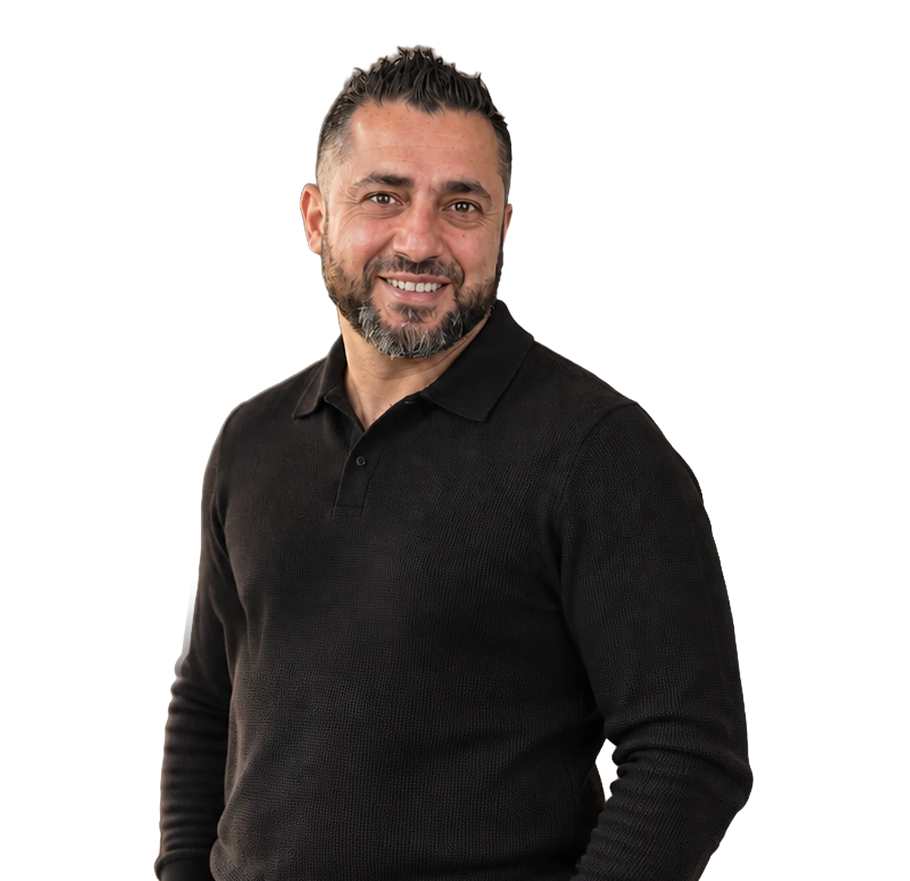

★★★★★
"OK Timmerwerken levert vakwerk. Er werd goed meegedacht en alles is netjes op de bestaande situatie aangepast. Mooi en degelijk Douglas hout, EPDM-dak en keurig afgewerkte boeidelen."
PeterDen Haag · Carport voor 2 auto's
Achter OK Timmerwerken staat Ozcan. In de reviews die klanten schrijven staat zelden de bedrijfsnaam — er staat Ozcan. Dat zegt genoeg: u heeft één vast aanspreekpunt dat meedenkt, de klus zelf meedraait en 'm afmaakt zoals besproken.
Erkend VELUX Montagepartner — getraind en gecertificeerd door VELUX
— Ozcan, OK TimmerwerkenSinds 2019 werkt OK Timmerwerken vanuit Gorinchem aan woningen in de wijde omgeving: van een gevlinderde vloer in een schuur tot een complete verbouwing met doorbraak, vliering en dakramen.
Ozcan werkt met een vaste ploeg vakmensen. Geen wisselende onderaannemers, maar mensen die elkaars werk kennen — zodat het betonwerk, het timmerwerk en de afbouw naadloos op elkaar aansluiten.
Als erkend VELUX Montagepartner en met tientallen reviews van tevreden klanten op Werkspot en Google weet u waar u aan toe bent.
Klantgericht. Professioneel. Flexibel. Dat zijn de principes waar we elke dag naar werken — en op al onze werkzaamheden krijgt u garantie.
U belt met Ozcan, niet met een kantoor. Hij komt kijken, maakt de offerte en staat zelf op de bouw.
Vakmensen die al jaren samenwerken. Dat merkt u aan het tempo én aan de afwerking.
Een heldere offerte en een realistische planning. Wat erin staat, is wat u krijgt.
Ozcan komt graag langs om uw plannen te bespreken — gratis en vrijblijvend.
"OK Timmerwerken levert vakwerk. Er werd goed meegedacht en alles is netjes op de bestaande situatie aangepast. Mooi en degelijk Douglas hout, EPDM-dak en keurig afgewerkte boeidelen."
"Ozcan is een sterke allround aannemer die actief meedenkt en oplossingsgericht werkt. Van het doorbreken van een dragende muur tot een nieuwe vliering: alles vakkundig en strak uitgevoerd."
"Vriendelijk, betrouwbaar, transparant en goede communicatie. Ik wist niets van beton en vloeren, en Ozcan gaf me uitstekend advies op basis van wat ik nodig had."
Vertel kort wat u van plan bent. Ozcan reageert binnen een dag en komt graag langs om het ter plaatse te bekijken.